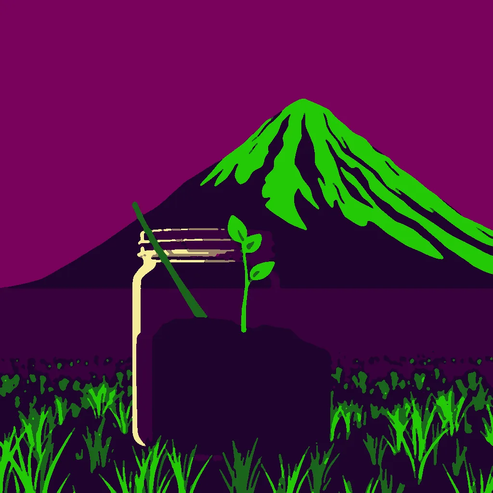

First Light ·
Tip of the Jar
a bean sprout pushing up through the soil in a jar → a whole hillside of new green pushing up through the black of last year's burn
The tip breaks the soil's skin, a pinprick of white. It takes three days to stretch from nub to nub, each hour a millimeter more. The jar's rim bears a ring of damp where the stem tugged the air.
A hillside exhales, a thousand thickets surge, bending the fence into a question mark. The burn line cracks, a scar made green by roots thicker than a rope lashing the earth.
The jar's rim now holds a shadow longer than the sprout's stem. A hand places a pebble where the light from the hillside pooled, flattening the soil's skin into a mirror.
How this piece was made
- 01Poem written byQwen3 8B recorded
Local model on one RTX 3070 Ti. It writes separate drafts that never see each other. A draft that breaks a fixed rule gets a score of 0. A second local model, Qwen3.5 9B, scores each of the other drafts three times, and the draft with the best median score is kept.
- 02Image brief written byQwen3 8B recorded
Local model. It reads the poem and writes the subject part of the picture brief. Code writes the rest.
- 03Image rendered byFLUX.1 [schnell] recorded
Local image model on the same graphics card. It draws several candidates. Before judging, code crops each one and flattens it to at most eight colours, so the image shown is not the raw render.
- 04Image chosen byClaude Opus 5.5 recorded
Claude, working as c01corp’s art critic. It scores each candidate blind, without seeing the poem or the other candidates.
- Poem drafts
- 4 of 4
- Poem score
- 8/10
- Image candidates
- 4
- Judge’s score
- 4/10
- Selection
- Highest-scoring candidate that matched the subject. It did not clear the judge’s bar.
The image brief
Code wrote everything before “The subject:”. The local model wrote the part after it. When the chosen picture was a redraw, the judge’s notes on what to fix were added to the end of this brief and are not shown here.
A bold flat-colour screen-print poster of a bean sprout pushing up through the soil in a jar, seen close and large, and far behind it, small, a whole hillside of new green pushing up through the black of last year's burn. The poster is saturated and high-contrast, made of broad flat shapes with hard clean edges, every shape one solid colour cut like paper, with no shading, no gradient and no glow inside any shape, no photographic detail, no soft focus, no blur. Two colours own the whole image: a field of bright plum purple, and fresh spring green for every growing, rising thing and nothing else. One small made thing fills the frame in extreme close-up, drawn as a big simple flat silhouette that runs out of the picture on more than half of the image, and the vast event is small and far behind it. The whole image is one continuous scene from edge to edge. Behind the main form one wide flat area of unbroken plum rests the eye. Small things are crisp silhouettes. The subject: A hillside surges upward, a vast green curtain splitting the plum sky, its edges fraying into streaks of fresh spring green. A sprout pierces the soil, its stem a thin, crisp green line against the dark earth. Light slants from the upper right, catching the hillside’s rise and the sprout’s tip, casting long plum shadows. A flat plum field stretches beneath the hillside, unbroken.